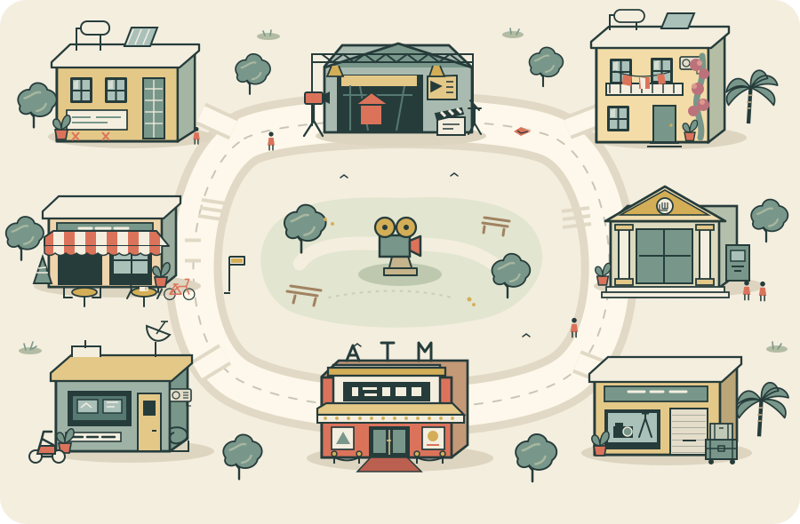

העיר היא הלוח שלך
כאן הדמות שלךתל אביב. כולם מכירים מישהו.

TAKE 01עיר קטנה.
חלומות גדולים.לחצו על מקום ובחרו מה עושים.
חלומות גדולים.לחצו על מקום ובחרו מה עושים.
◌ מעבר למקום אחר נכלל בעלות הפעולה: שעה אחת.נשמר אוטומטית בדפדפן